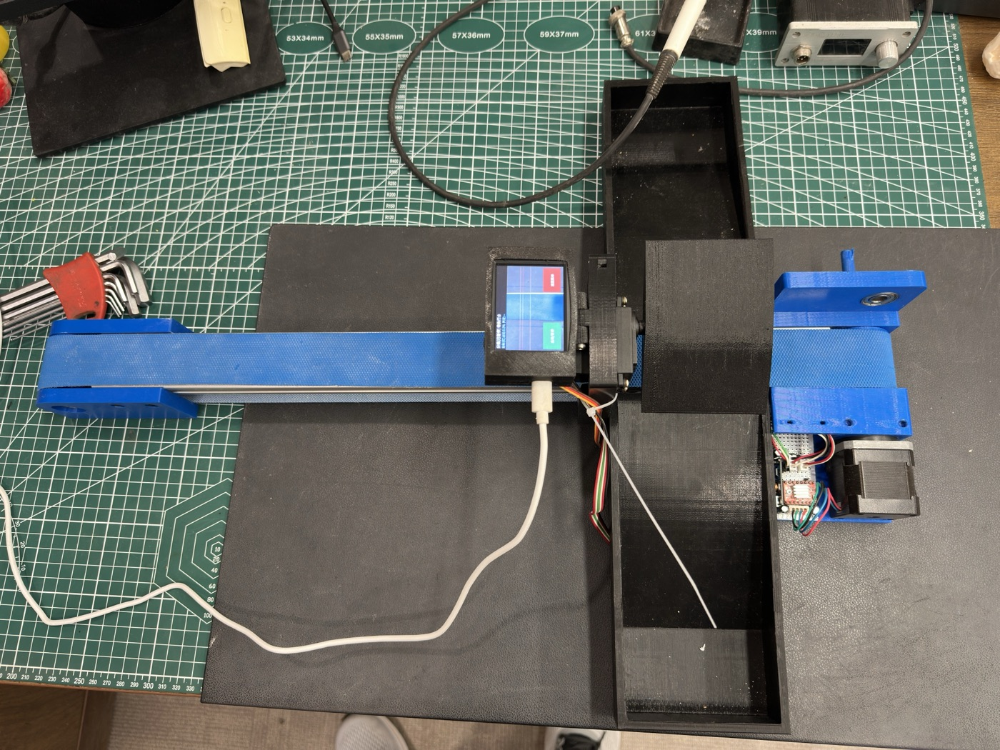
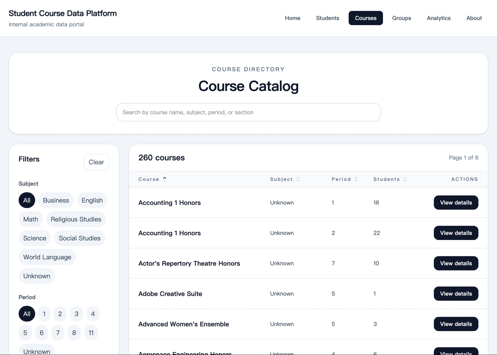
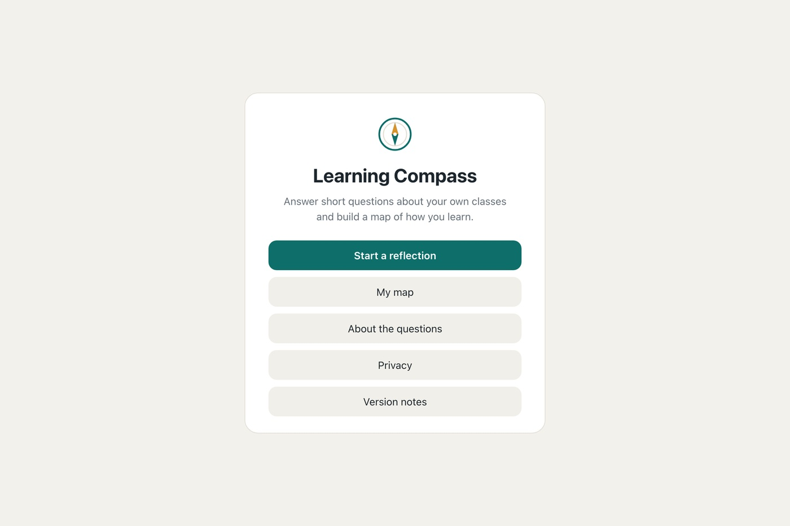

Hi, I'm Andy.
I'm a senior in high school, and these are five projects I've built since 10th grade.
Each page is mostly photos and video, with short notes on how it works.

01Machine Vision Strawberry Sorter
A conveyor that sorts strawberries by ripeness, using a camera and a servo-driven flap.

02Thinking Map
A political ideology quiz built as a decision tree, with 105 possible results.

03Student Course Data Platform
A course catalog and student search built with React from my grade's Schoology data.

04Engineering Magnet Builds
A few of my 100+ builds from the engineering program: logic circuits on a breadboard and a PLD, plus CAD.

05Learning Compass
A reasoning map that helps students understand how they learn and choose for themselves.